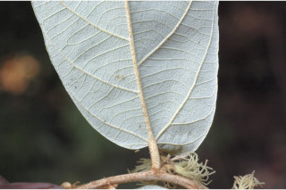
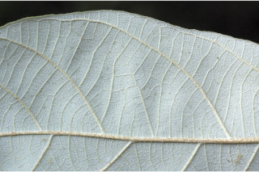
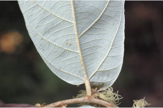
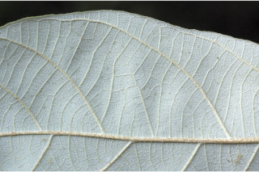
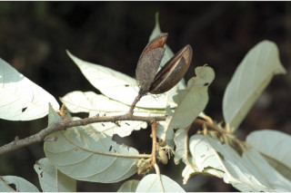
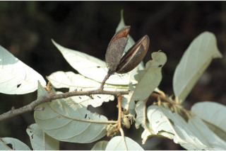

Trees up to 20 m tall.
20 ಮೀ ಎತ್ತರದವರೆಗಿನ ಮರಗಳು.
Trees up to 20 m tall.
மரங்கள் 20 மீ. உயரம் வரை வளரக்கூடியது.
Bark greyish brown with longitudinally arraned lenticels; blaze red.
ತೊಗಟೆ ಬೂದು ಮಿಶ್ರಿತ ಕಂದು ಬಣ್ಣ ಹೊಂದಿದ್ದು, ಉದ್ದ ಸಾಲಿನಲ್ಲಿ ವ್ಯವಸ್ಥಿತಗೊಂಡ ವಾಯುವಿನಿಮಯ ಬೆಂಡು ರಂಧ್ರಗಳ ಸಮೇತವಿರುತ್ತವೆ;ಕಚ್ಚು ಮಾಡಿದ ಜಾಗ ಕೆಂಪು.
Bark greyish brown with longitudinally arraned lenticels; blaze red.
மரத்தின் பட்டை சாம்பல்-ப்ரவுன் நிறமானது, நீள்வாக்கில் லெண்டிசெல் அமைந்தவை; உள்பட்டை சிவப்பு நிறமானது.
Young branchlets slender, terete, densely white tomentose and stellate hairy.
ಎಳೆಯ ಕಿರುಕೊಂಬೆಗಳು ತೆಳುವಾಗಿದ್ದು, ದುಂಡಾಗಿರುತ್ತವೆ, ಬಿಳಿ ಬಣ್ಣದ ದಟ್ಟ ಮೃದು ತುಪ್ಪಳದಿಂದ ಮತ್ತು ನಕ್ಷತ್ರ ರೋಮಗಳಿಂದ ಕೂಡಿರುತ್ತವೆ.
Young branchlets slender, terete, densely white tomentose and stellate hairy.
சிறியநுனிக்கிளைகள் மெல்லியவை, குறுக்குவெட்டுத் தோற்றத்தில் வளையமானது, அடர்த்தியாக வெள்ளை நிறமான உரோமங்களுடையது மற்றும் நட்சத்திர வடிவ உரோமங்களுடையது.
Leaves simple, alternate, distichous; stipule lateral, caducous; petiole ca. 0.7 cm long, terete, stellate tomentose when young, later glabrous; lamina 5-14.5 x 2.5-7.5 cm, oblong, obovate or pandurate and irregularly toothed or lobed towards apex, apex acuminate, base asymmetric to cordate to obtuse, margin entire, white tomentose and stellate hairy beneath, coriaceous; 3-5-nerved at base; midrib canaliculate above; secondary_nerves 5-6 pairs, prominent beneath; tertiary_nerves strong and obliquely percurrent.
ಎಲೆಗಳು ಸರಳವಾಗಿದ್ದು ಪರ್ಯಾಯ ಮತ್ತು ಸುತ್ತು ಜೋಡನಾ ವ್ಯವಸ್ಥೆಯಲ್ಲಿದ್ದು ಕಾಂಡದ ಎರಡೂ ಕಡೆ ಎದುರು ಬದರಿನ ಲಂಬ ಸಾಲಿನಲ್ಲಿರುತ್ತವೆ ;ಕಾವಿನೆಲೆಗಳು ಪಾರ್ಶ್ವದಲ್ಲಿದ್ದು,ಉದುರಿಹೋಗುವ ಮಾದರಿಯವುಗಳಾಗಿರುತ್ತವೆ; ತೊಟ್ಟುಗಳು ಅಂದಾಜು0.7 ಸೆಂ.ಮೀ. ಉದ್ದವಿದ್ದು, ದುಂಡಾಗಿರುತ್ತವೆ,ಎಳೆಯದಾಗಿದ್ದಾಗ ನಕ್ಷತ್ರ ರೂಪದ ದಟ್ಟ ಮೃದು ತುಪ್ಪಳದಿಂದ ಕೂಡಿದ್ದು ನಂತರ ರೋಮರಹಿತವಾಗಿರುತ್ತವೆ; ಪತ್ರಗಳು 5 – 14.5 X 2.5 – 7.5 ಸೆಂ.ಮೀ. ಗಾತ್ರ,ಚತುರಸ್ರ,ಬುಗುರಿ ಅಥವಾ ಪಿಟೀಲು ಮಾದರಿಯ ಆಕಾರ ಹೊಂದಿದ್ದುಅಗ್ರದ ಕಡೆಯಲ್ಲಿ ಅನಿಯತವಾಗಿ ದಂತಿತವಾಗಿ ಅಥವಾ ಹಾಲೆಯುಕ್ತವಾಗಿರುತ್ತವೆ, ತುದಿ ಕ್ರಮೇಣ ಚೂಪಾಗುವ ಮಾದರಿಯಲ್ಲಿದ್ದು,ಬುಡ ಅಸಮ್ಮಿತಿಯಾದ ಮಾದರಿ,ಹೃದಯದ ಆಕಾರದಿಂದ ಚೂಪಲ್ಲದವರೆಗಿನ ರೀತಿಯಲ್ಲಿರುತ್ತದೆ, ಅಂಚು ನಯವಾಗಿರುತ್ತದೆ,ಪತ್ರಗಳ ತಳ ಭಾಗ ಬಿಳಿ ಬಣ್ಣದ ಮೃದುತುಪ್ಪಳದಿಂದ ಮತ್ತು ನಕ್ಷತ್ರ ರೂಪದ ರೋಮಗಳಿಂದ ಆವೃತವಾಗಿರುತ್ತದೆ ಹಾಗೂ ತೊಗಲನ್ನು ಹೋಲುವ ಮೇಲ್ಮೈ ಹೊಂದಿರುತ್ತದೆ;ಪತ್ರಗಳು ಬುಡದಲ್ಲಿ3- 5 ನಾಳಗಳ ಸಮೇತವಿರುತ್ತವೆ; ಮಧ್ಯನಾಳ ಪತ್ರದ ಮೇಲ್ಭಾಗದಲ್ಲಿ ಕಾಲುವೆಗೆರೆ ಸಮೇತವಿರುತ್ತದೆ; ಎರಡನೇ ದರ್ಜೆಯ ನಾಳಗಳು 5 - 6 ಜೋಡಿಗಳಿದ್ದು ತಳಭಾಗದಲ್ಲಿ ಪ್ರಮುಖ -ವಾಗಿರುತ್ತವೆ; ಮೂರನೇ ದರ್ಜೆಯ ನಾಳಗಳು ದೃಢವಾಗಿದ್ದು ,ಓರೆಯಾಗಿ ಎಲೆಯ ದಿಂಡಿಗೆ ಅಡ್ಡವಾಗಿ ಕೂಡುವ ಮಾದರಿಯಲ್ಲಿರುತ್ತವೆ.
Leaves simple, alternate, distichous; stipule lateral, caducous; petiole ca. 0.7 cm long, terete, stellate tomentose when young, later glabrous; lamina 5-14.5 x 2.5-7.5 cm, oblong, obovate or pandurate and irregularly toothed or lobed towards apex, apex acuminate, base asymmetric to cordate to obtuse, margin entire, white tomentose and stellate hairy beneath, coriaceous; 3-5-nerved at base; midrib canaliculate above; secondary_nerves 5-6 pairs, prominent beneath; tertiary_nerves strong and obliquely percurrent.
இலைகள் தனித்தவை, மாற்றுஅடுக்கமானவை, இருநெடுக்கு வரிசையிலையடுக்கம் (டைஸ்டிக்கஸ்); இலையடிச்செதில் பக்கவாட்டில் அமைந்தவை, எளிதில் உதிரக்கூடியது; இலைக்காம்பு 0.7 செ.மீ. நீளமானது, குறுக்குவெட்டுத் தோற்றத்தில் வளையமானது, இளம்பருவத்தில் நட்சத்திர வடிவ உரோமங்களுடையது, முதிரும் போது உரோமங்களற்றது; இலை அலகு 5-14.5 X 2.5-7.5 செ.மீ., நீள்சதுர வடிவானது, தலைகீழ் முட்டை வடிவானது அல்லது பாண்டுரேட் வடிவானது மற்றும் நுனிப்பகுதியில் ஒழுங்கற்ற பற்களுடையது அல்லது பிளவுகளுடையது, அலகின் நுனி அதிக்கூரியது, அலகின் தளம் சமமற்றது முதல் இதய வடிவானது முதல் மெட்டையானது, அலகின் விளிம்பு முழுமையானது, அலகின் கீழ்பரப்பு வெள்ளை நிறமான உரோமங்களுடையது மற்றும் நட்சத்திர வடிவ உரோமங்களுடையது, கோரியேசியஸ்; தளத்திலே 3-5 நரம்புகளை உடையது; மையநரம்பு மேற்புறத்தில் அலகின் பரப்பைவிட பள்ளமானது; இரண்டாம் நிலை நரம்புகள் 5-6 ஜோடிகள், கீழ்பரப்பில் தடித்தவை; மூன்றாம் நிலை நரம்புகள் தடித்தவை மற்றும் தளம் நோக்கிய பெர்க்கரண்ட்..
Flowers white, in terminal or axillary fascicles, solitary; bracteoles laciniate; pedicel 0.3 cm long.
ಹೂಗಳು ಬಿಳಿ ಬಣ್ಣದಲ್ಲಿರುತ್ತವೆ ಮತ್ತು ತುದಿಯಲ್ಲಿನ ಅಥವಾ ಅಕ್ಷಾಕಂಕುಳಿನ ಗುಚ್ಛಗಳಲ್ಲಿರುತ್ತವೆ, ಹಾಗೂ ಒಂಟಿಯಾಗೂ ಇರುತ್ತವೆ;ಉಪ ಪತ್ರಕಗಳು ಆಳವಾದ ಸೀಳಿಕೆಗಳ ಸಮೇತವಿರುತ್ತವೆ;ಹೂತೊಟ್ಟುಗಳು 0.3 ಸೆಂ.ಮೀ.ಉದ್ದವಿರುತ್ತವೆ.
Flowers white, in terminal or axillary fascicles, solitary; bracteoles laciniate; pedicel 0.3 cm long.
மலர்கள் வெள்ளை நிறமானது, தண்டின் நுனியில் அல்லது இலைக்கோணங்களில், தனித்தவை அல்லது தொகுப்பாக காணப்படுபவை; சிறுபூவடிச்செதில் விளிம்புகளில் பிளவுகளுடையது; மலர்காம்பு 0.3 செ.மீ. நீளமானது.
Capsule, brown, 5-angled and 5-valved, stellately pubescent; seeds 4 in each cell, winged at one end.
ಸಂಪುಟ ಫಲಗಳು ಕಂದು ಬಣ್ಣ ಹೊಂದಿದ್ದು, 5-ಕೋನಗಳ ಮತ್ತು 5-ಕೋಶಗಳ ಸಮೇತವಿದ್ದು ನಕ್ಷತ್ರ ರೂಪದ ಮೃದುತುಪ್ಪಳದಿಂದ ಕೂಡಿರುತ್ತವೆ; ಪ್ರತಿ ಕೋಶದಲ್ಲಿ 4 ಬೀಜಗಳು ಇರುತ್ತವೆ,ಮತ್ತು ಒಂದು ತುದಿಯಲ್ಲಿ ರೆಕ್ಕೆಯ ಸಮೇತವಿರುತ್ತವೆ.
Capsule, brown, 5-angled and 5-valved, stellately pubescent; seeds 4 in each cell, winged at one end.
வெடிகனி (கேப்சியூல்), ப்ரவுன் நிறமானது, 5-கோணங்களுடையது மற்றும் 5-அறைகளுடையது, நட்சத்திர வடிவ உரோமங்களுடையது; ஒவ்வொரு அறையிலும் 4 விதைகளுடையது, அதன் ஒர் பக்கத்தில் இறகுடையது.


 





 
